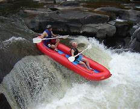
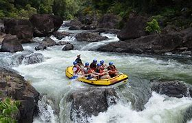
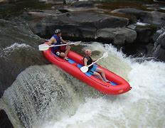
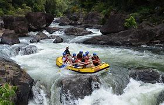

Our Mission
Our mission is to provide unforgettable rafting adventures. We are dedicated to providing safe and exciting rafting trips for all of our guests. Our experienced guides are passionate about rafting and are committed to making sure that you have the best experience possible. Whether you are a first-time rafter or an experienced paddler, we have a trip that is perfect for you. We offer a variety of trips on some of the most beautiful rivers in the country. Come join us for an adventure of a lifetime!
 


